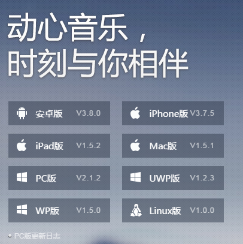
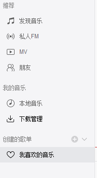

总体步骤：
下载音乐客户端->在音乐客户端里下载歌曲->再打开下载歌曲的文件夹->将歌曲文件复制到U盘
详细步骤：
- 在百度首页搜索“网易云音乐”，点击搜索出来的第一个链接，进入网易云音乐官网首页，如图：

- 点击右侧蓝色的按钮“下载客户端”，然后在新的页面点击“PC版”，如图：

- 点击以后电脑下载了网易云音乐客户端安装包，双击下载后的安装包，根据提示完成安装。
- 安装完毕后，打开网易云音乐客户端。
- 在顶部红色部分，有一个搜索栏（旁边有一个放大镜标志），在这里输入想要下载的歌曲，如图：
- 输入之后，单击回车，屏幕显示搜索出来的结果，从中选择要找的音乐（这些歌曲的歌手不同，注意查看），找到之后，在歌名左边有一个向下的箭头，是下载符号，如图：
- 单击下载符号，弹出对话框，“选择下载到歌单”，可以直接选择“我喜欢的音乐”这个列表，也可以新建其他列表。选择后，自动开始下载。稍等一会就下载完毕。
- 此时点击页面右侧灰色部分中间“我喜欢的音乐”，如图：

- 点击进入“我喜欢的音乐”列表，可以看到刚才下载的音乐。（歌名前面有一个蓝色的对号√，表示歌曲已经下载成功）。
- 然后鼠标右键点击歌名，选择“打开文件所在目录”
- 点击后，即打开了存放下载歌曲的文件夹，在这里复制粘贴到U盘即可。
总结一下！下载音乐客户端->在音乐客户端里下载歌曲->再打开下载歌曲的文件夹->将歌曲文件复制到U盘
备注：客户端不一定是“网易云音乐”，这里仅拿它举例，不过网易云音乐客户端相比于其他客户端来说，更加干净，不会让用户安装乱七八糟的其他东西。